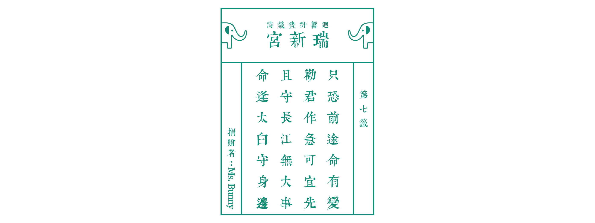

<!DOCTYPE HTML>
<!--
	Twenty by HTML5 UP
	html5up.net | @ajlkn
	Free for personal and commercial use under the CCA 3.0 license (html5up.net/license)
-->
<html>
	<head>
		<title>瑞新宮 | 求支籤吧！</title>
		<meta charset="utf-8" />
		<meta name="viewport" content="width=device-width, initial-scale=1, user-scalable=no" />
		<link rel="stylesheet" href="assets/css/main.css" />
		<noscript><link rel="stylesheet" href="assets/css/noscript.css" /></noscript>
	</head>
	<body class="no-sidebar is-preload">
		<div id="page-wrapper">

			<!-- Header -->
				<header id="header">
					<h1 id="logo"><a href="index.html"></a></h1>
					<nav id="nav">
						<ul>
							<li class="current"><a href="https://www.rethinktoolkit.com/menu">行動迴圈目錄</a></li>
							<li class="current"">
								<a href="index.html">瑞新宮</a>
							</li>
						</ul>
					</nav>
				</header>

			<!-- Main -->
				<article id="main">
					<!-- One -->
						<section class="wrapper style4 container">

							<!-- Content -->
								<div class="content">
									<section>
                                        <a href="#" class="image featured"></a>
                                        <br>
										<header>
											<h3 style="text-align: center;">連連看，迸出火花</h3>
                                        </header>
                                        <br>
											<p>
												Brainstorming看似是個很輕鬆隨意的過程，但若在其中加入一點小巧思可以讓團隊在發想的過程蹦出更多不一樣的火花！<br>
												這是教練在團隊發想點子卡住時常常使用的一個小撇步，除了可以讓點子有更多不一樣的延伸之外，也能夠提振腦袋快被榨乾的大家的精神喔！<br>
												<br>
												1.先停下腳步，仔細看看現在已經被想出來的點子有哪些<br>
												2.如果可以的話，將性質類似的點子放在一起讓大家可以更一目瞭然<br>
												3.在接下來的三到五分鐘，只能就現有的點子做補充，目的是讓單個點子更完整<br>
												4.串連，目的是用不同的點子串連激發出有趣的變形<br>
												5.如果覺得卡住的情形有改善了，就可以回到原本團隊排定的流程囉！<br>
                                            </p>
                                            <br>
                                            <h3>小提醒</h3>
                                            <p>
												許多偉大的點子在被想出來之前都被認為是不可能，不要害怕，把各種瘋狂有趣的點子都丟出來吧！<br>
												為了要把現有的點子做補充與串連，了解每個點子的內容是很重要的喔！有看不懂的就發問吧！<br>												
                                            </p>

									</section>
								</div>

						</section>


				</article>

			<!-- Footer -->
				<footer id="footer">
					<ul class="icons">
						<li><a href="#" class="icon brands circle fa-facebook-f"><span class="label">Facebook</span></a></li>
						<li><a href="#" class="icon brands circle fa-youtube"><span class="label">Youtube</span></a></li>
					</ul>

					<ul class="copyright">
						<li>&copy;2019 by Rethink Taiwan</li>
					</ul>

				</footer>

		</div>

        <!-- Scripts -->
            <script src="assets/js/lottery.js"></script>
			<script src="assets/js/jquery.min.js"></script>
			<script src="assets/js/jquery.dropotron.min.js"></script>
			<script src="assets/js/jquery.scrolly.min.js"></script>
			<script src="assets/js/jquery.scrollgress.min.js"></script>
			<script src="assets/js/jquery.scrollex.min.js"></script>
			<script src="assets/js/browser.min.js"></script>
			<script src="assets/js/breakpoints.min.js"></script>
			<script src="assets/js/util.js"></script>
			<script src="assets/js/main.js"></script>
		

	</body>
</html>